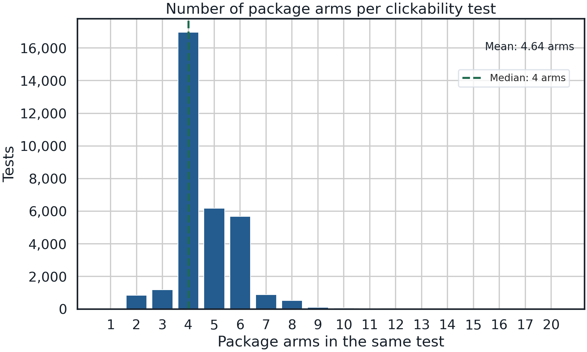
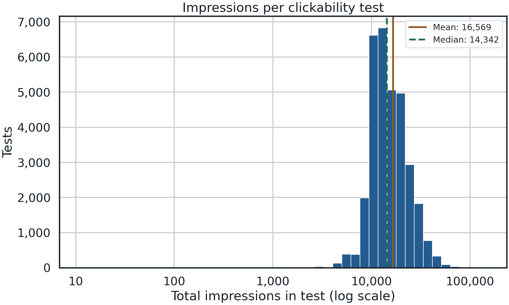
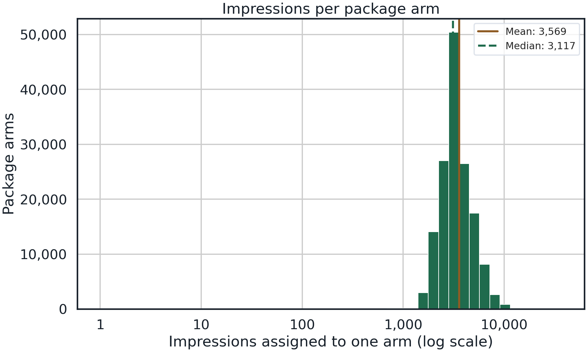
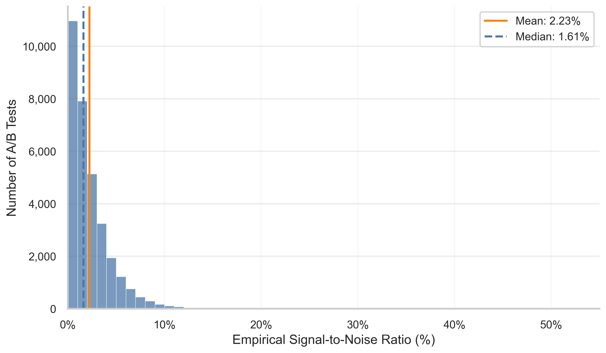
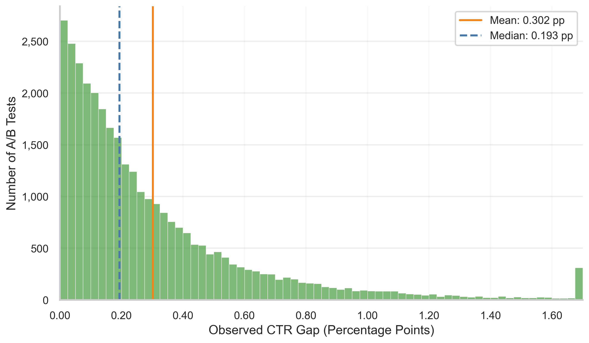
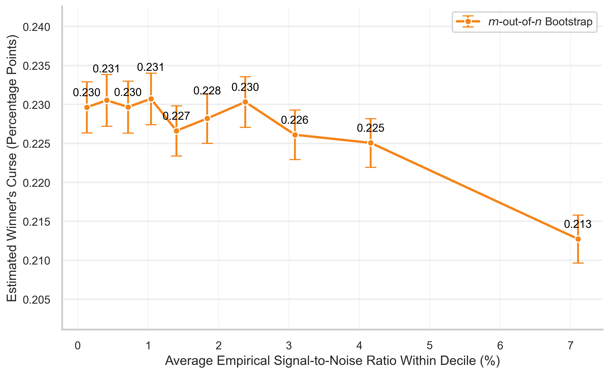
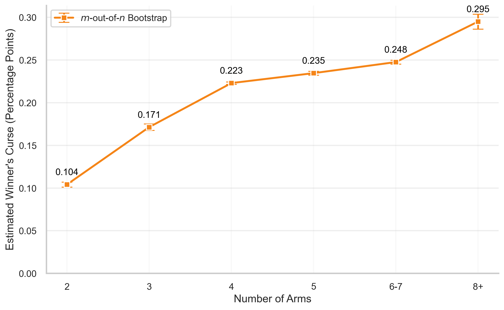
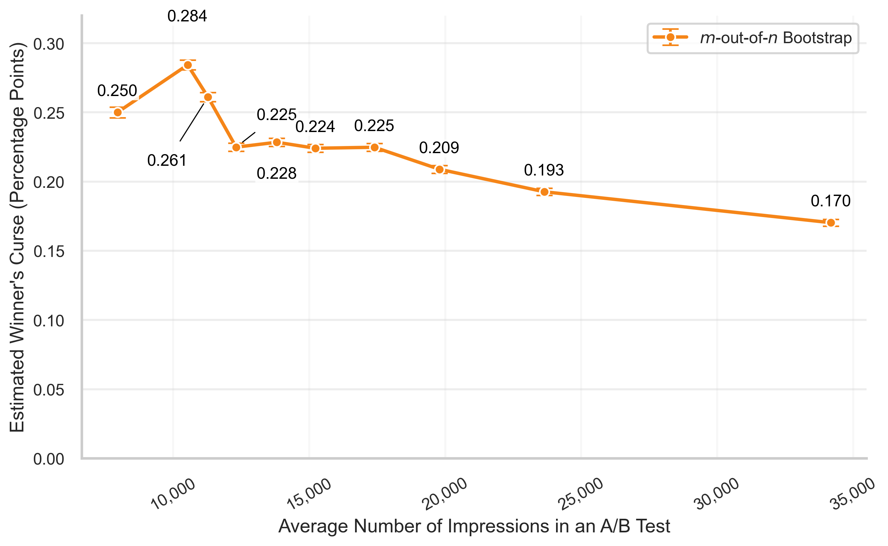
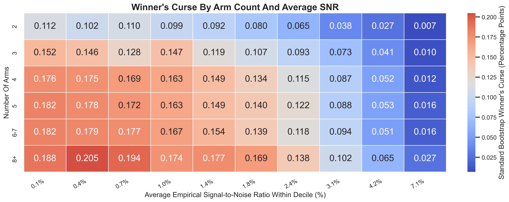

Upworthy Research Archive Dataset
A public archive of large-scale headline and image package experiments that can support an empirical study of noisy winner selection, winner's curse bias, and bootstrap correction in multi-arm online A/B tests.
Audit snapshot: June 27, 2026. Source project:
OSF Upworthy Research Archive.
Local root:
dataset/upworthy/manifest.json.
clickability_test_id. Action set: all
headline/image/social-preview packages in the same test.
Outcome: aggregate click count and impression count
for each package arm. Primary study variable: arm-level
click-through rate, with within-arm binary-click standard deviation
recovered from the aggregate counts.
Institutional Context and Provenance
Upworthy.com was a U.S. media publisher that used high-volume A/B testing to choose article promotion packages. A package could include a headline, lede or subheading, thumbnail image, and social media share text. Readers were randomly assigned to package variants for the same story, and the content management system recorded impressions and clicks for each arm.
The public archive is designed for aggregate research use. It does not contain viewer-level records, personal information, or individual assignment logs. The empirical study therefore works with binomial summaries at the package-arm level.
The assignment within each clickability test is randomized among package arms. The main winner's curse issue is not confounding by observed user traits; it is selection over noisy realized click rates when editors, analysts, or algorithms choose the apparent best arm after looking at the results.
Dataset Facts vs. Study Interpretations
| Item | Dataset fact | Study interpretation |
|---|---|---|
| Rows | 150,817 deployed package arms and 78,232 undeployed package rows are stored locally. | Use deployed arms for click-outcome analysis; treat undeployed packages as stimulus inventory only. |
| Tests | The deployed files contain 32,487 unique clickability_test_id values. |
Selection happens within test, not against a global control group. |
| Outcomes | impressions and clicks are aggregate counts for each package arm. |
Click-through rate is the arm mean; binary-click SD and SE are recovered from binomial counts. |
| Treatment or action | Each package arm combines text and image choices shown to readers. | The action set is test-specific and multi-arm. Nonwinning arms are alternatives, not a no-treatment control. |
| Source license | OSF reports CC-By Attribution 4.0 International. | Retain source attribution and OSF links in replication materials. |
Visual Context
The screenshot folder contains public timestamped images that document what Upworthy pages and promotion modules looked like during the sample period. These images are contextual examples, not row-level examples selected from a particular analysis table.


Raw Schema
The raw schema table reports deployed files after concatenating exploratory, confirmatory, and holdout files. Missingness and unique counts are computed before any analytical cleaning. Repository-added split labels and source decision-status fields are documented outside this raw design/content/outcome schema.
| Column | Role | Type | Missing | Missing % | Unique | Research note |
|---|---|---|---|---|---|---|
clickability_test_id |
Test identifier | string | 0 | 0.00% | 32,487 | Defines the randomized experiment and the candidate action set. |
created_at, updated_at, test_week |
Timestamp | timestamp / integer | 0 | 0.00% | 121 weeks | Use for temporal heterogeneity, drift, and split construction checks. |
headline |
Text stimulus | string | 1 | 0.00% | 65,362 | Primary text field for language-based heterogeneity and embeddings. |
excerpt, lede, share_text |
Text stimulus | string | varies | 0.07%-86.14% | 10,151-16,636 | Optional text components; missingness must be part of any text-feature audit. |
slug |
Identifier | string | 0 | 0.00% | 142,964 | Article/package URL slug; use for linkage and diagnostics, not as a primary control. |
eyecatcher_id, square |
Image pointer | string | 181 / 101,017 | 0.12% / 66.98% | 43,687 / 12,386 | Media identifiers or image fields; useful for image availability checks. |
impressions |
Outcome denominator | integer | 0 | 0.00% | 8,405 | Number of randomized viewer assignments exposed to the package arm. |
clicks |
Outcome numerator | integer | 0 | 0.00% | 483 | Number of clicks recorded for the package arm. |
Cleaning and Sample Construction
The baseline analysis sample keeps every deployed package arm with a valid test id, positive impressions, and observed clicks. No CTR trimming or winsorization is applied in the page audit.
| Step | Rows before | Rows after | Rows dropped | % deployed retained | Definition |
|---|---|---|---|---|---|
| Load deployed CSVs | 150,817 | 150,817 | 0 | 100.0% | Concatenate exploratory, confirmatory, and holdout package files. |
| Valid test id | 150,817 | 150,817 | 0 | 100.0% | Keep rows with nonmissing clickability_test_id. |
| Valid aggregate outcome | 150,817 | 150,817 | 0 | 100.0% | Keep rows with observed impressions and clicks. |
| Derived audit sample | 150,817 | 150,817 | 0 | 100.0% | Write dataset/upworthy/derived/deployed-arm-audit.csv. |
The archive includes 78,232 package drafts in the separate undeployed file. They are retained as stimulus inventory, but excluded from CTR analysis because they were not deployed as randomized clickability-test arms.
Deployed arm creation timestamps run from January 24, 2013 to April 30, 2015.
Mean 4.64, median 4, 95th percentile 7, maximum 20 package arms per test.
Exploratory Data Analysis
A Typical Test: What a Package Arm Is
Upworthy used the term "package" for the reader-facing bundle attached
to a story: headline, excerpt or subheading, lede, social-preview text,
and image identifier. In this page, a package arm is one randomized
alternative inside a clickability_test_id. The example
below is mechanically typical: it has 4 arms and 14,337 impressions,
very close to the sample medians of 4 arms and 14,342 impressions per
test.
| Field | Value for example test |
|---|---|
clickability_test_id |
53c820204273de3f6700007b |
| Source file split | Confirmatory |
| Test week | 201428 |
| Package creation window | July 17, 2014 19:12:32 to July 17, 2014 19:15:47 |
| Total observations and outcomes | 14,337 impressions, 65 clicks, weighted CTR 0.4534% |
| Shared visual element | eyecatcher_id=53c7210329d067199e0000a0; share_text is blank for all four arms. |
| Arm | Headline | Excerpt | Lede text | Slug | Impressions | Clicks | CTR | Status fields |
|---|---|---|---|---|---|---|---|---|
| 1 | You Take A Picture Of Your Food And Tag It With This. What You Get Is Less Hunger. | What if politicians were so inspired by all our tags that they really did shape up and solve that pesky hunger thing? | I gotta say, I love it that Virgin Mobile stared a problem like hunger in the face. The story text asks readers to tag food pictures with #MealForAMeal. |
you-take-a-picture-of-your-food-and-tag-it-with-this-what-you-get-is-less-hunger-lw2-9a |
3,635 | 16 | 0.440% | first_place=false, winner=false |
| 2 | You Take A Picture Of Your Food And Tag It. What You Get Is Less Hunger. | Not only will you not waste the beauty of your food, but you won't waste actual food, too. | I gotta say, I love it that Virgin Mobile stared a problem like hunger in the face. The story text asks readers to tag food pictures with #MealForAMeal. |
you-take-a-picture-of-your-food-and-tag-it-what-you-get-is-less-hunger-lw2-9b-2 |
3,572 | 20 | 0.560% | first_place=true, winner=true |
| 3 | If You Take A Picture Of Your Food And Tag It, What You Get Less Hunger | Virgin Mobile stares a problem like hunger in the face and... | I gotta say, I love it that Virgin Mobile stared a problem like hunger in the face. The story text asks readers to tag food pictures with #MealForAMeal. |
if-you-take-a-picture-of-your-food-and-tag-it-what-you-get-less-hunger-lw2-9c |
3,538 | 13 | 0.367% | first_place=false, winner=false |
| 4 | Take A Picture Of Your Food. Tag It. Bam! Less Hunger. | Virgin Mobile stares a problem like hunger in the face and... | I gotta say, I love it that Virgin Mobile stared a problem like hunger in the face. The story text asks readers to tag food pictures with #MealForAMeal. |
take-a-picture-of-your-food-tag-it-bam-less-hunger-lw2-9d |
3,592 | 16 | 0.445% | first_place=false, winner=false |
Test Size and Arm Count Distributions
In this audit, an observation is an impression assignment because the
public archive is aggregate rather than viewer-level. The denominator
for a test is total impressions summed across all package arms in the
same clickability_test_id; the denominator for an arm is
the row-level impressions count.
The typical deployed experiment is a multi-arm headline/package test: 52.2% of tests have exactly 4 arms, 88.7% have 4 to 6 arms, and only 2 deployed test ids have a single observed arm in the deployed files. Winner-selection analyses should define whether those single-arm cases are kept for denominator totals or excluded from within-test selection.
| Quantity | Mean | SD | P25 | Median | P75 | P95 | Max | Interpretation |
|---|---|---|---|---|---|---|---|---|
| Arms per test | 4.64 | 1.20 | 4 | 4 | 5 | 7 | 20 | Number of candidate packages in each clickability test. |
| Impressions per test | 16,568.87 | 7,858.60 | 11,271 | 14,342 | 19,700 | 32,120 | 146,783 | Total randomized impressions allocated across all arms in the test. |
| Impressions per arm | 3,569.05 | 1,436.00 | 2,745 | 3,117 | 4,089 | 6,220 | 36,908 | Row-level arm denominator across the 150,817 deployed arms. |



Deployed Splits
| Split | Arms | Tests | Impressions | Clicks | Weighted CTR | Mean arm CTR | SD of arm CTR | Mean click SD | Mean click SE |
|---|---|---|---|---|---|---|---|---|---|
| Confirmatory | 105,551 | 22,743 | 376,529,158 | 5,741,684 | 0.015249 | 0.015846 | 0.012380 | 0.116802 | 0.002076 |
| Exploratory | 22,666 | 4,873 | 81,024,151 | 1,231,208 | 0.015196 | 0.015754 | 0.012289 | 0.116441 | 0.002068 |
| Holdout | 22,600 | 4,871 | 80,719,569 | 1,209,782 | 0.014987 | 0.015554 | 0.012410 | 0.115517 | 0.002058 |
Outcome Means and Standard Deviations by Source Status Fields
The source files include post-outcome status fields that are useful for
diagnostics but should not be treated as pre-selection covariates.
first_place flags the package identified by the archive as
the first-place performer in the test results. winner
flags the package marked as the selected or finalized winner. These can
differ because editors could finalize a package other than the
best-performing package, and many tests have no marked winner.
Because only aggregate counts are public, the within-arm binary outcome standard deviation is recovered as:
$$ s_{ij} = \sqrt{\frac{c_{ij}(n_{ij}-c_{ij})}{n_{ij}(n_{ij}-1)}}, \qquad \widehat{p}_{ij} = \frac{c_{ij}}{n_{ij}}, $$
where package arm $j$ in test $i$ has $c_{ij}$ clicks and $n_{ij}$ impressions. This standard deviation is critical for winner's curse analysis because selected arms tend to combine high realized click rates with nontrivial sampling noise.
| Group | Arms | Tests represented | Weighted CTR | Mean arm CTR | SD of arm CTR | Mean within-arm click SD | Mean click SE |
|---|---|---|---|---|---|---|---|
first_place=true |
32,122 | 32,122 | 0.019616 | 0.020386 | 0.013879 | 0.134227 | 0.002364 |
first_place=false |
118,695 | 32,487 | 0.013992 | 0.014544 | 0.011621 | 0.111772 | 0.001993 |
winner=true |
7,664 | 7,653 | 0.022359 | 0.023081 | 0.014989 | 0.143114 | 0.002523 |
winner=false |
143,153 | 32,487 | 0.014814 | 0.015398 | 0.012092 | 0.115133 | 0.002048 |
Distribution Facts
| Variable | Mean | SD | P25 | Median | P75 | P95 | Max | Design note |
|---|---|---|---|---|---|---|---|---|
click_rate |
0.015789 | 0.012371 | 0.007458 | 0.012509 | 0.020386 | 0.039248 | 0.183401 | Arm-level mean click outcome. |
click_sd |
0.116555 | 0.042512 | 0.086056 | 0.111160 | 0.141343 | 0.194223 | 0.408248 | Recovered within-arm binary-click outcome SD. |
click_se |
0.002072 | 0.001186 | 0.001426 | 0.001918 | 0.002534 | 0.003732 | 0.166667 | Arm-level standard error of CTR. |
impressions |
3,569.05 | 1,436.00 | 2,745 | 3,117 | 4,089 | 6,220 | 36,908 | Per-arm outcome denominator. |
clicks |
54.26 | 45.52 | 25 | 42 | 70 | 139 | 975 | Per-arm outcome numerator. |
For a pure winner's curse exercise, define the selection rule
explicitly, such as highest estimated CTR within each test. The
archive's winner flag is a useful editorial-decision
diagnostic, but it is not identical to a highest-realized-CTR rule.
Current Feature Schema
| Component | Definition | Use in empirical study |
|---|---|---|
| Action set | All rows sharing a clickability_test_id. |
Candidate arms for within-test selection and post-selection inference. |
| Primary outcome mean | click_rate = clicks / impressions. |
Estimated click probability for a package arm. |
| Outcome noise | click_sd and click_se in derived/deployed-arm-audit.csv. |
Needed for bootstrap correction, sample splitting, shrinkage, and winner-selection comparisons. |
| Text features | headline, lede, excerpt, share_text. |
Optional covariates or heterogeneity dimensions; document missingness before featurizing. |
| Image features | eyecatcher_id, square, and timestamped screenshot folder. |
Image identifiers support modality checks; screenshots are contextual and not arm-level media cache. |
| Excluded from pre-selection controls | clicks, impressions, click_rate, significance, first_place, winner. |
These are outcomes or post-outcome decision diagnostics. |
Control-Validity Audit
| Class | Variables | Use in adjustment? | Documentation requirement |
|---|---|---|---|
| Pre-exposure stimulus content | headline, lede, excerpt, share_text, image identifiers |
Yes, for content-based precision or heterogeneity if available before selection | State whether features are text-only, image-only, or multimodal. |
| Experiment identifiers | clickability_test_id, test_week |
Use for grouping; fixed effects only if estimand requires it | Selection and comparisons must stay within test. |
| Outcomes | impressions, clicks, click_rate, click_sd, click_se |
No, except as outcome and uncertainty inputs | Do not include realized outcome variables as predictors of selection quality. |
| Post-outcome decisions | first_place, winner, significance |
No for causal adjustment | Use for descriptive decision diagnostics or alternative selection labels. |
Literature Use Audit
A journal-targeted search found two verified uses in the requested top business journals: Marketing Science published a large-scale headline-experiment analysis using Upworthy data and the Ye, Yoganarasimhan, and Zheng LOLA paper on LLM-assisted online learning for content experiments. No direct evidence was found for qualifying uses in Journal of Marketing Research, Management Science, or Journal of Marketing as of the June 27, 2026 audit.
Requested-Journal Search Result
| Requested outlet | Search result | Evidence checked | Interpretation for paper writing |
|---|---|---|---|
| Journal of Marketing Research | No qualifying paper found. | SAGE JMR native searches for Upworthy, Upworthy Research Archive, headline experiments, Upworthy.com, and clickability_test_id returned zero results; OpenAlex source S119950638 and Crossref were secondary checks. |
Do not cite a JMR precedent for this exact dataset. |
| Marketing Science | Two qualifying papers found. | The Language That Drives Engagement: A Systematic Large-scale Analysis of Headline Experiments uses a large-scale Upworthy.com headline-experiment dataset and cites the archive. LOLA: LLM-Assisted Online Learning Algorithm for Content Experiments is listed by Pubsonline as a Marketing Science article, accepted February 11, 2025 and published online March 24, 2025. | Cite the first as the headline-experiment precedent and LOLA as the adaptive experimentation / LLM-assisted content-optimization precedent. |
| Management Science | No qualifying paper found. | INFORMS Pubsonline Management Science native searches for Upworthy, headline experiments, content experiments, and clickability_test_id returned zero results; OpenAlex source S33323087 and Crossref were secondary checks. |
Management Science online-experiment papers should be treated as topical analogues only if independently relevant. |
| Journal of Marketing | No qualifying paper found. | SAGE JM native searches for Upworthy, Upworthy Research Archive, headline experiments, Upworthy.com, and clickability_test_id returned zero results; OpenAlex source S142990027 and Crossref were secondary checks. |
Do not conflate Journal of Marketing with adjacent marketing outlets. |
Selected Papers That Use or Cite the Archive
| Paper | Outlet | Dataset-use evidence | How to use it |
|---|---|---|---|
| Matias, Munger, Le Quere, and Ebersole. 2021. The Upworthy Research Archive, a time series of 32,487 experiments in U.S. media. | Scientific Data | Describes the public archive, 32,487 experiments, 150,817 arms, and 538,272,878 participant assignments. | Primary citation for dataset provenance and variables. |
| Banerjee and Urminsky. The Language That Drives Engagement: A Systematic Large-scale Analysis of Headline Experiments. | Marketing Science | Pubsonline lists the article in Marketing Science 44(3):566-592. The abstract describes a large-scale dataset of field experiments on Upworthy.com. | Cite as the top-journal headline-language and engagement precedent. |
| Ye, Yoganarasimhan, and Zheng. LOLA: LLM-Assisted Online Learning Algorithm for Content Experiments. | Marketing Science | Pubsonline lists the article in Marketing Science 44(5):995-1016. The article uses Upworthy headline experiments to evaluate LLM-assisted online learning for content optimization. | Cite as a top-journal Upworthy application for adaptive experimentation and LLM-assisted content optimization. |
| Negativity drives online news consumption. | Nature Human Behaviour | Analyzes randomized Upworthy headline/story variations and clicks/impressions. | Cite as high-profile use of Upworthy experiments outside business journals. |
| Did clickbait crack the code on virality? | Journal of the Academy of Marketing Science | Cites the archive and studies clickbait/virality questions adjacent to marketing. | Cite as marketing-adjacent but not one of the four requested outlets. |
| Linguistic effects on news headline success. | PLOS ONE | Registered report using thousands of Upworthy online field experiments. | Cite for language-feature analysis and preregistered use. |
| Reading dies in complexity: Online news consumers prefer simple writing. | Science Advances | Cites the archive and studies headline readability and click behavior. | Cite for content-feature evidence outside business journals. |
Empirical Analysis of the Winner's Curse
The empirical run applies the paper's inference-then-optimization
design to the Upworthy archive: within each
clickability_test_id, select the package arm with the
largest observed CTR, then estimate how much that selected winner's CTR
is overstated by noisy selection. Results below are plain averages
across eligible tests, so each clickability test counts once.
The saved run requires at least 1,000 impressions in every arm and uses
32,389 eligible tests and 150,408 deployed arms from
per_test_estimates.csv.gz.
Hybrid selective inference has 32,254 valid tests because rows with
missing corrected estimates are excluded from that estimator's average.
Empirical Signal-to-Noise Ratio
For each eligible clickability test $i$, arms are sorted by observed click-through rate $\widehat p_{ij}=c_{ij}/n_{ij}$. Let $(1)$ denote the top observed arm and $(2)$ denote the runner-up observed arm. The recovered within-arm binary-click standard deviation for arm $j$ is:
$$ s_{ij} = \sqrt{\frac{c_{ij}(n_{ij}-c_{ij})}{n_{ij}(n_{ij}-1)}}. $$
The empirical test-level SNR is the top-vs-runner-up CTR gap divided by the pooled within-arm standard deviation scale of those two leading arms:
$$ \widehat{\rho}_i = \frac{\widehat p_{i(1)}-\widehat p_{i(2)}} {\sqrt{\left(s_{i(1)}^2+s_{i(2)}^2\right)/2}}. $$
This is an outcome-level signal-to-noise ratio, not a $t$-statistic: the denominator uses the recovered click standard deviations, not standard errors divided by impression counts. All 32,389 eligible tests have a defined SNR under the 1,000-impression-per-arm cutoff.
| SNR summary statistic | Value |
|---|---|
| Defined tests | 32,389 |
| Mean | 2.23% |
| Standard deviation | 2.16% |
| Minimum | 0.00% |
| 25th percentile | 0.71% |
| Median | 1.61% |
| 75th percentile | 3.07% |
| 90th percentile | 4.97% |
| 95th percentile | 6.41% |
| 99th percentile | 9.87% |
| Maximum | 54.70% |
| SNR at least 10% | 305 tests (0.94%) |
| SNR at least 20% | 6 tests (0.02%) |

Winner-Runner-Up CTR Gap
The raw top-two separation is the numerator of the empirical SNR. For each eligible test, define the observed winner-runner-up gap as:
$$ \widehat g_i = \widehat p_{i(1)}-\widehat p_{i(2)}. $$
This gap is reported below in percentage points, so 0.25 pp means a one-quarter percentage-point CTR difference between the observed winner and the runner-up.
| Winner-runner-up gap statistic | Value |
|---|---|
| Eligible tests | 32,389 |
| Mean | 0.302 pp |
| Standard deviation | 0.358 pp |
| Minimum | 0.000 pp |
| 25th percentile | 0.083 pp |
| Median | 0.193 pp |
| 75th percentile | 0.394 pp |
| 90th percentile | 0.693 pp |
| 95th percentile | 0.945 pp |
| 99th percentile | 1.656 pp |
| Maximum | 15.859 pp |
| Tied top observed CTR | 10 tests (0.03%) |
| Gap below 0.10 pp | 9,568 tests (29.54%) |
| Gap below 0.25 pp | 19,206 tests (59.30%) |
| Gap at least 1 pp | 1,418 tests (4.38%) |
| Gap at least 2 pp | 167 tests (0.52%) |

Main Result: Selected-Winner CTR Before and After Correction
| Estimator | Valid tests | CTR estimate | Estimated overstatement | Overstatement / naive CTR | Interpretation |
|---|---|---|---|---|---|
| Naive selected winner | 32,389 | 2.058%(0.008 pp) | Reference | Reference | Observed CTR of the arm with the largest realized CTR in each test. |
| Standard Bootstrap | 32,389 | 1.935%(0.008 pp) | 0.123 pp(0.0005 pp) | 7.79%(0.03 pp) | Bootstrap correction subtracting estimated selection bias from the selected winner. |
| m-out-of-n Bootstrap | 32,389 | 1.869%(0.008 pp) | 0.189 pp(0.0005 pp) | 11.52%(0.03 pp) | Subsample-scaled bootstrap correction for noisy winner selection. |
| Sample Splitting | 32,389 | 1.882%(0.008 pp) | 0.176 pp(0.0006 pp) | 11.00%(0.04 pp) | Split-sample comparator that chooses on one subset and evaluates on another. |
| Empirical Bayes | 32,389 | 1.910%(0.008 pp) | 0.147 pp(0.0004 pp) | 8.78%(0.02 pp) | Shrinkage estimate for the selected arm under a normal empirical prior. |
| Hybrid Selective Inference | 32,254 | 1.857%(0.008 pp) | 0.202 pp(0.0015 pp) | 13.20%(0.10 pp) | Selective-inference correction for post-selection winner evaluation. |
Parentheses report cross-test standard errors in percentage points
(pp).
The overstatement / naive CTR ratio is defined for every eligible test
under the 1,000-impression-per-arm cutoff.
The naive selected winner averages 2.058% CTR. All correction
estimators lower the selected-winner CTR, with estimated overstatement
ranging from 0.123 to 0.202 percentage points in the saved empirical
run.
Mechanism Figures
The mechanism plots use the notebook's empirical SNR, arm-count bins, total-impression deciles, and percentage-point winner's curse definitions. The standard bootstrap and m-out-of-n bootstrap are shown together where the comparison is most direct.




Source Notes for Paper Writing
| Statement | Source | How to use it |
|---|---|---|
| The archive is an OSF project titled The Upworthy Research Archive. | OSF project page and local manifest.json. |
Cite for data access and license. |
| The archive contains 32,487 experiments, 150,817 arms, and 538,272,878 participant assignments. | Scientific Data archive paper and local audit. | Cite paper for public description; cite local audit for repository replication. |
| The deployed package files are split into exploratory, confirmatory, and holdout samples. | 02.2021-create-research.samples.py. |
Use when explaining split construction and preregistration discipline. |
| The local source files match OSF SHA-256 hashes. | dataset/upworthy/manifest.json. |
Use as a drift check for future downloads. |
| Arm-level click SD and SE are repository-derived from aggregate counts. | derived/deployed-arm-audit.csv. |
Cite local audit, not OSF metadata, for these constructed fields. |
| Marketing Science has verified Upworthy applications. | DOI 10.1287/mksc.2021.0018 and DOI 10.1287/mksc.2024.0990. | Use as top-journal precedents for headline experiments and adaptive content experimentation. |
Local Audit Commands
pythonwith OSF API metadata to download source files and verify SHA-256 hashes.pythonwith pandas to createderived/deployed-arm-audit.csvandderived/audit-summary.json.pythonwith pandas and matplotlib to create the histogram PNGs indocs/assets/upworthy/.- Publisher-native literature search protocol documented in
docs/literature-search-audit-protocol.md. find dataset/upworthy -maxdepth 3 -type f | sortto inspect local file coverage.
Reproducibility Checklist
| Check | Expected value | Status for this audit |
|---|---|---|
| Local root | dataset/upworthy/ |
Present |
| Source files downloaded | 40 files from OSF, including PDFs, scripts, CSVs, screenshots, and README files | Verified |
| Screenshot folder | 29 OSF entries: 28 PNG screenshots plus README.md |
Verified |
| Hash verification | Every local source file SHA-256 matches OSF metadata | Verified in manifest.json |
| Deployed package arms | 150,817 | Verified |
| Deployed tests | 32,487 | Verified |
| Impressions | 538,272,878 | Verified |
| Clicks | 8,182,674 | Verified |
| Weighted CTR | 0.0152017 | Verified |
| Derived audit fields | click_rate, click_sd, click_se |
Written to derived/deployed-arm-audit.csv |
| HTML page | docs/upworthy-dataset.html |
Generated from local audit facts |
| Descriptive histogram assets | docs/assets/upworthy/*.png |
Generated from derived/deployed-arm-audit.csv |